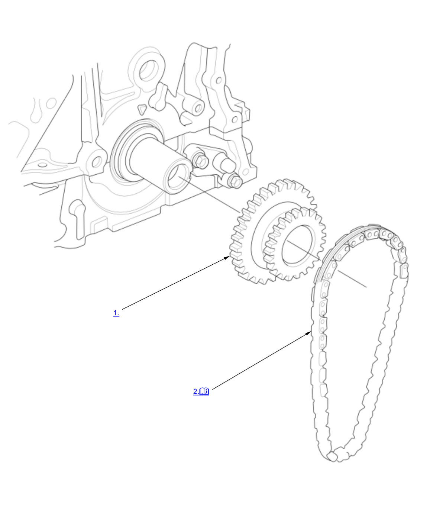

Engine Oil Pump Chain Removal and Installation (K20C1) (2017 2018 2019 2020 2021): Installation: Procedure
NOTE:
Numbered call-outs in figure pertain to list numbers in following procedure.

Courtesy of HONDA, U.S.A., INC. |
Detailed information, notes, and precautions |
- Crankshaft Sprocket - Install
- Oil Pump Chain - Install
1. Set the crankshaft to top dead center (TDC). Align the TDC mark (A) on the crankshaft sprocket with the pointer (B) on the engine block. 2. Install the oil pump chain.
NOTE: These marks (C) shall be used in product process only and not used for maintenance purpose. There is no need to line up the marks as it has no effect on the engine operation.
- Oil Pump - Install
- Engine - Support
1. Lift and support the engine with a jack and a wood block under the oil pan. - Engine Support Hanger and Universal Lifting Eyelet - Remove
- Cam Chain - Install